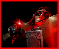
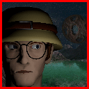
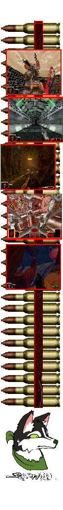

Klostyn is a first person shooter that tells the story of space archaeologist Ethan Nova, Visit the Steam Page.  This story begins 86 years before the events of the game, in 2619. Humanity had discovered and advanced wormhole technology, and now everyone was searching for the origins of mankind. At that time, Dr. David Ishil discovered the planet Arcadia, located 3.4 billion light-years from Earth, and set out to investigate it. Shortly after returning to Earth, he announced that human-like aliens were living there. But no one believed him. Undeterred, Dr. Ishil returned to Arcadia to conduct research that would convince the world, but he never came back. In 2702, his daughter was cleaning out his laboratory when she discovered his research materials and numerous photographs of the alien species. This species had achieved a level of civilization comparable to the Mayans, valued peace, and even possessed the ability to perform photosynthesis. After confirming the situation on Arcadia, the Space Union invested heavily and created Genesis, an elite archaeological team composed only of top specialists. Download the Screensaver.  In 2705, the 24year old brilliant and determined Ethan Nova joined the Genesis team and set out for Arcadia with his teammates. But Ethan did not know the danger that awaited them: the Genesis ships were ambushed by pirates who had already claimed the planet, and they crashed. In the end, Ethan Nova was the only survivor, and his desperate struggle for survival began. Watch the Intro Cinematic. Features of this game
© 2026 Secordrian. |
 |